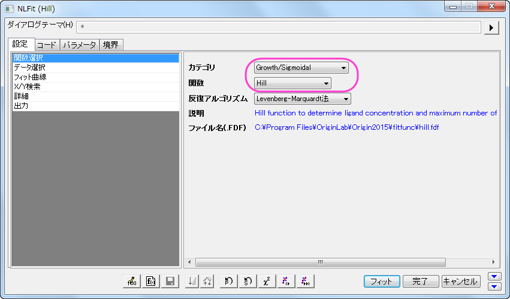
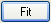

システム関数で非線形フィットを行う
Fitting-NLFit-Built-in
概要
「NLFit」ダイアログは、非線形フィット処理中にフィット処理を確認することができるインタラクティブなツールです。このチュートリアルでは、Michaelis-Menten関数を使ってフィットします。これは、酵素反応速度での基本的なモデルで、これを例にして「NLFit」ダイアログの基本機能を説明します。フィットを実行する際にグローバルフィットを実行する方法を示します。これは、いくつかのパラメータを共有して、2つのデータセットを同時にフィットするものです。
必要なOriginのバージョン: Origin 8.0 SR6以降
学習する項目
このチュートリアルでは、以下の項目について解説します。
- 単一ASCIIファイルをインポートする方法
- パラメータを共有してグローバルフィットを実行する方法
- フィット範囲を選択して、データの一部をフィットする方法
- コマンドウィンドウを使って、簡単な計算を行う方法
ステップ
ファイルインポート
ワークブックを新しく作成します。ヘルプ: フォルダを開く: サンプルフォルダを選択して、サンプルフォルダを開きます。このフォルダ内のCurve FittingサブフォルダにあるEnzyme.dat ファイルを探します。空のワークシートにファイルをドラッグアンドドロップしてインポートします。
データをプロットする
列Bと列Cを選択して、 ボタンをクリックし、散布図としてプロットします。
ボタンをクリックし、散布図としてプロットします。
Michaelis-Menten関数でフィットする
単一基質の Michaelis-Menten 関数モデルは、酵素反応速度論で使用される基本モデルです。
![v=\frac{V_{max}[S]}{K_m+[S]}](../images/NLFIT_Built_In/math-b8d0588cf34e1ab60b8c19de1f2a4336.png "v=\frac{V_{max}[S]}{K_m+[S]}")
パラメータはが反応速度、![[S]](../images/NLFIT_Built_In/math-38bd6c19740e43396bd14b1575d58f60.png "[S]") は基質濃度、は最大速度、 は、Michaelisの定数を表します。 と のパラメータは重要な酵素の特性で、こららの値はM-M (Michaelis-Menten)関数を 対 でプロットした曲線にフィットして求めます。Originには、M-Mフィット関数はありませんが、より一般的なモデルである組み込みであるHill 関数を使ってフィットできます。
は基質濃度、は最大速度、 は、Michaelisの定数を表します。 と のパラメータは重要な酵素の特性で、こららの値はM-M (Michaelis-Menten)関数を 対 でプロットした曲線にフィットして求めます。Originには、M-Mフィット関数はありませんが、より一般的なモデルである組み込みであるHill 関数を使ってフィットできます。

ここで、  は結合サイトです。単一基質モデルの場合、
は結合サイトです。単一基質モデルの場合、 の値は固定します。よってモデルをシンプルにしてM-M関数のように使用できるようにします。
の値は固定します。よってモデルをシンプルにしてM-M関数のように使用できるようにします。
作図したグラフを確認すると、2つの曲線がある事が分かります。ひとつは抑制物質なし、もうひとつは競合型抑制物質がある場合です。非線形曲線フィットツールを使用して2つの曲線を一度にフィットしましょう。競合抑制反応に対して、最大反応速度は抑制無しと同じなので、フィット処理中に 値を共有することができ、グローバルフィットにより行われます。
- グラフをアクティブにして、解析：フィット：非線形曲線フィットと操作を行い、NLFitダイアログを開きます。設定：関数選択ページにあるGrowth/Sigmoidalカテゴリーから Hill 関数を選択します。
- 
- 設定：データ選択ページで、入力データの隣にある三角形のボタンをクリックし、現在のページのすべてのプロットを追加を選択して、データをセットします。
- 設定：データ選択ページにある複数データフィットモードのドロップダウンリストから グローバルフィットを選択します。
- パラメータタブをクリックし、 Vmaxの行にある共有チェックボックスにチェックを付けます。 これらの『共有』チェックボックスは、グローバルフィット モードを使っているときだけ利用できます。n と n_2の『固定』チェックボックスにチェックを付け、それらの値を1にします。
- 「フィット」ボタンをクリックし、分析レポートを生成します。元のグラフにフィットのパラメータが表示されます(以下の画像ではフィットパラメータ値のみが表示されています)。
フィット結果から、最大速度は、2162.8  であると結論付けできます。抑制なしの場合、の値は1.78
であると結論付けできます。抑制なしの場合、の値は1.78 になります。競合型抑制の場合、の値は4.18になります。
になります。競合型抑制の場合、の値は4.18になります。
Lineweaver-Burk プロットをフィットする
モデルのパラメータは、Lineweaver-Burkまたは二重逆数プロットによっても推定できます。Lineweaver-Burkプロットは、 M-M関数の両側の逆数を取り、 1/v と 1/[S]でプロットします。
これは実際には線形の関数です。

抑制なしの場合のデータを使用して、計算方法とL-Bプロットを示します。
- 元のデータのワークシートに行き、
 ボタンをクリックして、2つ以上の列を追加します。列Dを右クリックして、列XY属性の設定: X列を選択してX列に設定します。再度、列Dを右クリックして、ショートカットメニューから列値の設定を選択し、値の設定ダイアログを開きます。ダイアログの編集ボックスに
ボタンをクリックして、2つ以上の列を追加します。列Dを右クリックして、列XY属性の設定: X列を選択してX列に設定します。再度、列Dを右クリックして、ショートカットメニューから列値の設定を選択し、値の設定ダイアログを開きます。ダイアログの編集ボックスに 1/Col(A) と入力し、この例では逆数の値を自動更新する必要はないので、再計算モードを「無し 」にします。
- 同様に、列Eの値を
1/Col(B)として設定します。列DとEのロングネームをそれぞれ &  として入力します。すると、次のようになります。
として入力します。すると、次のようになります。
- 列Dと列Eを選択し、 ボタンをクリックして、散布図を作成します。
- 上記の式から、
1/v と 1/[S] には線形の関係があることが分かっているので、線形フィットツールを使って、このプロットを直線でフィットできます。（解析：フィット：線形フィットより線形フィット機能を使用することもできます）
- もう一度、非線形曲線フィットのダイアログを開き、「Polynomial」カテゴリーから Line 関数を選び、「フィット」ボタン  をクリックして、直接結果を生成します。
- プロットから離れているデータポイントがあるので、これが最も良いフィットであるかどうかは疑う必要があります。実際、L-Bプロットの右側には、低い基質濃度の領域があり、測定誤差が大きいかもしれません。そのため、これらのデータポイントを除外した方が無難でしょう。
- グラフの左上の角にある錠のアイコンをクリックして、パラメータの変更を選び、NLFitダイアログに戻ります。
- 設定：データ選択ページで、入力データノードにある ボタンをクリックし、メニューから「グラフからすべてのデータを再選択する」を選択します。
- NLFitダイアログは最小化し、 グラフページにカーソルを移動すると、カーソルが
 のようになります。フィットしたデータポイントを囲むようにドラッグして矩形を描きます。すると、入力範囲は縦線で印が付けられます。縦線をクリックして移動すれば、入力範囲を変更することができます。
のようになります。フィットしたデータポイントを囲むようにドラッグして矩形を描きます。すると、入力範囲は縦線で印が付けられます。縦線をクリックして移動すれば、入力範囲を変更することができます。
- グラフから範囲を選択するにある
 ボタンをクリックして、「NLFit」ダイアログに戻ります。
ボタンをクリックして、「NLFit」ダイアログに戻ります。
- 「NLFit」ダイアログの「フィット 」ボタンをクリックして、結果を再計算します。レポートテーブルが更新されたのがグラフから分かります。
- フィット曲線の切片が
 であり、この例では、これは
であり、この例では、これは 4.76191E-4 です。値を得るには、ウィンドウ：コマンドウィンドウを選択し、コマンドウィンドウを開き、次のように入力します。
1/4.76191E-4 = - そして、ENTERキーを押します。
- Originは
2099という値を返し、これは上記で得た2160に近い数字となっています。(Hill関数でフィットしたとき、2つのデータセットをフィットするのに を共有しました。 抑制無しのデータのみをフィットすれば、この値はもっと近くなります。)